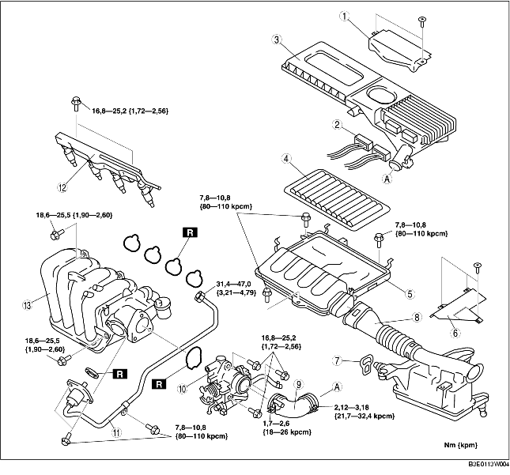
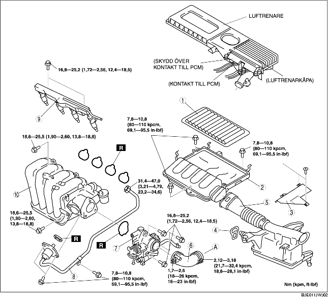

1. Demontera batterikåpan. (Se DEMONTERING/MONTERING AV BATTERI [ZJ, Z6].)
2. Lossa batteriets minuskabel.
3. Ta bort den undre kåpan.
4. Demontera i den ordning som anges i tabellen.
5. Montera i omvänd ordning mot demonteringen.
6. Följ anvisningarna under 'FÖRSIKTIGHETSÅTGÄRDER EFTER SERVICE'. (Se FÖRSIKTIGHETSÅTGÄRDER EFTER SERVICE [ZJ, Z6, LF].)

.
1. Demontera batterikåpan. (Se DEMONTERING/MONTERING AV BATTERI [ZJ, Z6].)
2. Lossa batteriets minuskabel.
3. Ta bort den undre kåpan.
4. Vid demontering av luftrenarkåpan, genomför följande procedur och gå sedan till steg 6.
5. Ta undan luftrenaren så att den inte är ivägen.
6. Demontera i den ordning som anges i tabellen.
7. Montera i omvänd ordning mot demonteringen.
8. Följ anvisningarna under 'FÖRSIKTIGHETSÅTGÄRDER EFTER SERVICE'. (Se FÖRSIKTIGHETSÅTGÄRDER EFTER SERVICE [ZJ, Z6, LF].)

.
|
1
|
Luftrenarelement
|
|
2
|
Luftrenarhölje
|
|
3
|
Friskluftsintagets kåpa
|
|
4
|
Strap
|
|
5
|
Friskluftsintag
|
|
6
|
Luftslang
|
|
7
|
Gasspjällhus
|
|
8
|
EGR-rör (insugningsrörets sida)
|
|
9
|
Bränslefördelare
|
|
10
|
Insugningsrör
|
1. Demontera avluftningsventilen. (Se DEMONTERING/MONTERING AV AVLUFTNINGSVENTIL [ZJ, Z6].)
2. Tappa ur kylvätskan. (Se BYTE AV KYLVÄTSKA.)
1. Koppla ur kylvätskeslangen från motorns kylvätskerör så som figuren visar.
2. Demontera gasvajerkonsolen från insugningsröret.
1. Montera EGR-rörets fästbultar och muttern i den ordning som tabellen visar.
1. Rikta in märkena på gasspjällhuset och luftslangen.
1. Kontrollera att två gummifästen monterats på batterihållaren.
2. Montera friskluftslangen vid gummifästena.
1. Använd remmen för att fästa skyddskåpan och friskluftslangen så som figuren visar.
1. Sätt in PCM-modulens kontakt helt och hållet i luftrenaren och tryck på armen tills du hör ett klick.